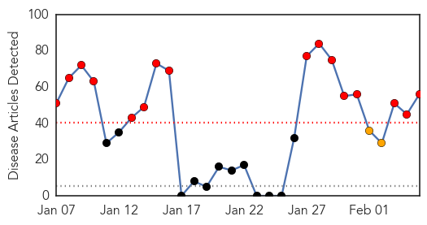
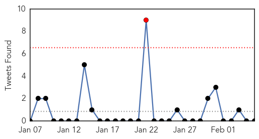
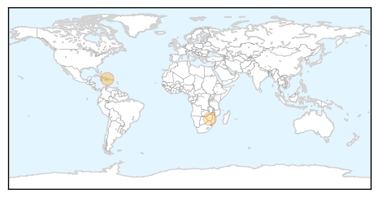

Unknown
30-Day Web Trend
16 alerts, 2 warnings

30-Day Twitter Trend
1 alerts, 0 warnings

Article Locations

Article Confidences

Top Articles:
- 0.956
- China's New Bird Flu Might Put People at Risk, Report Says
- 0.946
- Dozens hospitalized with flu
- 0.925
- IHN virus outbreak forces fish kill at Robertson Creek Hatchery
- 0.921
- African swine fever spreads to Russia
- 0.917
- Chicago Tribune
- 0.917
- Chicago Tribune
- 0.917
- Chicago Tribune
- 0.917
- Chicago Tribune
- 0.917
- Chicago Tribune
- 0.917
- Chicago Tribune
- 0.917
- Chicago Tribune
- 0.917
- Chicago Tribune
- 0.917
- Chicago Tribune
- 0.917
- Chicago Tribune
- 0.917
- Chicago Tribune
- 0.917
- Chicago Tribune
- 0.917
- Chicago Tribune
- 0.910
- The world windows to Thailand
- 0.910
- The world windows to Thailand
- 0.866
- Vatican vows to protect children but says UN interfering on teachings
- 0.866
- IDPs face uncertain future
- 0.839
- Threatwatch: Mother virus of China's deadly bird flu
- 0.807
- PEDV May not Result in Increasing Pork Prices
- 0.753
- 2 may have died from bacteria found in Indianapolis hospital’s water
- 0.747
- West Virginia doctors advising some patients not to drink tap water
- 0.734
- Doctors use mobile phones to reduce malaria deaths
- 0.714
- WHO delivers supplies to expand access to free emergency health services in Homs - Syrian Arab Republic
- 0.705
- Top tips for cruise passengers on avoiding norovirus
- 0.705
- 'Mad cow' suspected in death of 46-yr-old Sicilian man
- 0.697
- Turkish lawmakers adopt ‘Orwellian’ Internet curbs
- 0.697
- US lawmakers take aim at French rail for Holocaust role
- 0.697
- In Rwanda, memories linger as genocide trial opens in France
- 0.697
- Istanbul releases makeover plans for Taksim Square
- 0.697
- Paris denies French school is teaching sharia law in Qatar
- 0.697
- Cameron and Hollande meet to discuss defence, EU reform
- 0.695
- US condemns 'barbarity' of Syria's barrel bombs
- 0.695
- Microsoft names Satya Nadella as new CEO
- 0.686
- Tainted W.Va. water OK for everyone to use
- 0.664
- Tainted W.Va. water OK for everyone to use
- 0.659
- Google agrees 'significant' changes on EU pressure
- 0.659
- Opposition figure Belaid's 'assassin' killed, says Tunisia
- 0.651
- Hamburgers invade sit-down restaurants in France
- 0.635
- UN calls on Vatican to turn sex abuse suspects over to police
- 0.619
- US warns France against doing business with Iran
- 0.608
- Saudi Arabia has stopped isolating AIDS patients - Emirates 24
- 0.607
- Starfish ripped apart by mysterious disease
- 0.605
- Detecting foodborne illness in restaurants
- 0.586
- Dozens killed as bombs strike heart of Baghdad
- 0.584
- Ontario records more cases of piglet-killing virus
- 0.582
- New 'armor' in the battle against antibiotic resistant bacteria (Includes interview)
Showing top 50 articles...
Top Tweets:
-
No tweets found for Feb 05, 2014
Cholera
30-Day Web Trend
7 alerts, 3 warnings

30-Day Twitter Trend
8 alerts, 0 warnings

Article Locations
Article Confidences

Top Articles:
Top Tweets:
-
No tweets found for Feb 05, 2014